3rd Int. Workshop on
Diminished Reality
Introducing the 1st DR Challenge 🏆Co-located with IEEE ISMAR 2026
Description
We are back 👍 The International Workshop on Diminished Reality (IWDR) was previously held at ISMAR 2015 and 2016. At that time, progress in DR research was constrained by several technical challenges that were difficult to overcome before the deep learning era. As a result, the workshop series was discontinued.
However, the landscape has changed dramatically. Recent advances in visual computing, neural rendering, and multimodal perception have made practical DR applications far more feasible than a decade ago [1, 2]. These developments have also enabled deeper investigation into perceptual and cognitive aspects of DR systems [3]. With these shifts, the technical boundaries of DR have expanded substantially, creating a timely opportunity to revive IWDR and foster a new generation of DR research.
References
- [1] S. Mori, O. Erat, W. Broll, H. Saito, D. Schmalstieg, and D. Kalkofen, “InpaintFusion: Incremental RGB-D Inpainting for 3D Scenes,” IEEE TVCG, Vol. 26, Issue 10, pp. 2994–3007, 2020.
- [2] M. Kari and P. Abtahi, “Reality Promises: Virtual-Physical Decoupling Illusions in Mixed Reality via Invisible Mobile Robots,” Proc. ACM UIST, 2025.
- [3] Y. F. Cheng, H. Yin, Y. Yan, J. Gugenheimer, and D. Lindlbauer, “Towards Understanding Diminished Reality,” Proc. ACM CHI, 2025.
Topics: IWDR 2026 aims to bring together researchers working on the full spectrum of DR, from foundational technologies to perceptual studies and domain‑specific applications. Topics include, but are not limited to:
- DR core technologies: Vision- and graphics‑based DR pipelines / Methods for object removal, scene completion, and real‑time inpainting / DR in challenging modalities such as haptics, audio, and multimodal sensor fusion
- DR applications: XR applications leveraging DR in medicine, industrial support, entertainment, and telepresence / DR for safety‑critical or high‑precision environments / DR for accessibility and situational awareness
- Perceptual issues in DR: User performance and task efficiency under DR conditions / Perceptual thresholds, acceptance, and comfort / Cross‑modal perception when DR is applied to visual, auditory, or tactile cues
- Dataset and benchmarking for DR: DR datasets for training and evaluation / Benchmarking methodologies, metrics, and reproducible evaluation pipelines / Standardization
Contribute
We invite contributions through two tracks.
- Short papers (archival): Original research, surveys, demos, or position papers, up to 6 pages excluding references, in the IEEE Computer Society VGTC conference format. Anonymous submissions undergo formal review (two reviews per paper, plus a rebuttal). Accepted papers appear in the ISMAR 2026 Adjunct Proceedings on IEEE Xplore.
- DR challenge (non‑archival): The organizers will provide an implementation platform for WebXR-based DR systems using smartphone camera input. The platform will include fundamental components required for DR implementation, such as AR tracking, 3D scanning, 3D bounding-box detection, and inpainting modules. Participants are encouraged to build their own DR algorithms and applications on this platform and submit a short demonstration video recorded in their own environment (up to 2 min), along with a brief paper in the short papers format (up to 2 pages) summarizing the proposed algorithm and implementation details.
Important dates (provisional, aligned with the ISMAR 2026 workshop track). All deadlines are 23:59:59 AoE (Anywhere on Earth, UTC−12) on the stated day.
- Short paper submission: July 5, 2026
- Notification of acceptance: July 17, 2026
- Camera-ready materials: July 31, 2026
- (DR Challenge) Demonstration video and description submission: September 4, 2026
- (DR Challenge) Notification of invitation: September 18, 2026
- Workshop: October 5 or 6, 2026 (Bari, Italy / hybrid)
Contact: iwdr2026@googlegroups.com
DR Challenge
We plan to organize a hands‑on DR Challenge as a central activity of the workshop.
- Participants will be provided with: A mobile DR framework that separates heavy DNN‑based server processing from lightweight AR functions running on mobile devices A baseline DR implementation demonstrating real‑time diminished reality on smartphones
- Participants will be invited to: Develop improved DR algorithms, pipelines, applications, or benchmarking schemes Bring their systems to the workshop venue for on‑site demonstrations Discuss practical limitations of current DNN‑based DR, including latency, robustness, perceptual quality, and user experience
The challenge is designed to stimulate discussion on emerging technical bottlenecks and encourage reproducible experimentation in DR.
Keynote Speaker

Topic of the talk: Young star researcher in DR
Program
IWDR 2026 is a half-day, hybrid workshop. We deliberately move away from a "mini-conference" format — roughly half the time is reserved for interactive activity rather than paper presentations. Indicative agenda (subject to change):
- Welcome and framing (10 min)
- Keynote (45 min)
- Short paper session — 4 papers × 15 min (60 min)
- Coffee break (20 min)
- Challenger demonstrations and talks — 4 challengers × 15 min (60 min)
- Closing panel (35 min)
- Wrap-up and next steps (10 min)
Organizers